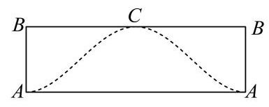
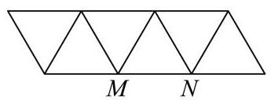
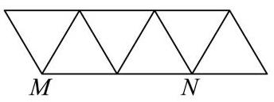
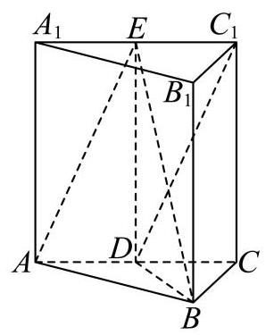
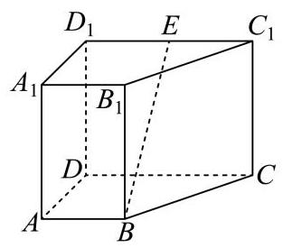
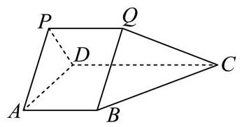
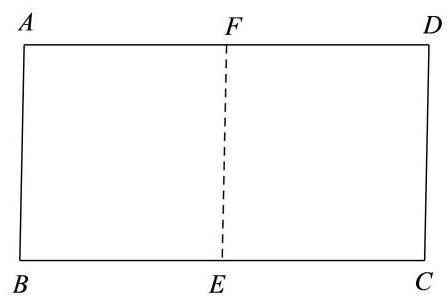
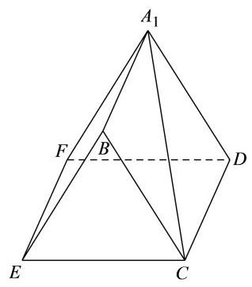
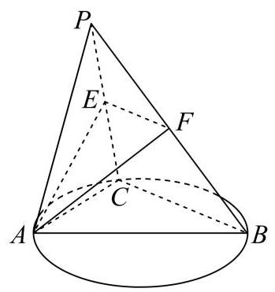
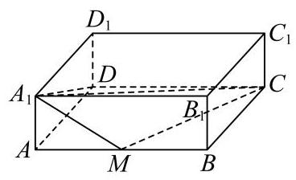

几何体的面积、体积与展开 由几何体参数和展开关系求面积体积，注意旋转后重叠部分。
奉贤 · 第5题 ★☆☆☆☆ · 教师预估 已知圆锥的高为 8，底面半径为 6，则该圆锥的侧面积为___.
宝山 · 第5题 ★☆☆☆☆ · 教师预估 将边长为 2 的正方形绕其一边旋转一周，所得几何体的体积为___.
崇明 · 第10题 ★★★★☆ · 教师预估 如图,已知圆柱的一个截面边界是椭圆 Γ \Gamma Γ Γ \Gamma Γ A C {AC} A C A B {AB} A B Γ \Gamma Γ y = 1 − 3 sin x 2 y = 1 - \sqrt{3}\sin \frac{x}{2} y = 1 − 3 sin 2 x Γ \Gamma Γ
B B B

普陀 · 第8题 ★★★☆☆ · 教师预估 在 A B C {ABC} A BC ∠ A C B = π 2 , A C = 1 \angle {ACB} = \frac{\pi }{2},{AC} = 1 ∠ A CB = 2 π , A C = 1 A A A l / / B C l//{BC} l // BC A B C {ABC} A BC l l l Ω \Omega Ω Ω \Omega Ω 4 3 π \frac{4}{3}\pi 3 4 π Ω \Omega Ω
杨浦 · 第7题 ★★☆☆☆ · 教师预估 已知圆锥的底面半径为 1,体积为 3 π 3 \frac{\sqrt{3}\pi }{3} 3 3 π
虹口 · 第2题 ★☆☆☆☆ · 教师预估 已知一个直三棱柱的侧棱长为 2，底面面积为 2，则该三棱柱的体积为___.
长宁 · 第15题 ★★★★☆ · 教师预估 本题资料或解析有待核事项，预览不可作为已审定成品。
将下列平面图形沿等边三角形的边折起，不能折成如图所示几何体的是( ).
A.
B.
D.

C.

闵行 · 第3题 ★☆☆☆☆ · 教师预估 已知球的表面积为 4 π {4\pi } 4 π
静安 · 第1题 ★☆☆☆☆ · 教师预估 直径为 22 c m {22}\mathrm{\;{cm}} 22 cm c m 2 {\mathrm{{cm}}}^{2} cm 2 π \pi π
黄浦 · 第3题 ★★☆☆☆ · 教师预估 底面半径为 1 、母线长为 3 的圆锥的侧面展开图中扇形的中心角为___.
黄浦 · 第11题 ★★★★☆ · 教师预估 本题资料或解析有待核事项，预览不可作为已审定成品。
在空间直角坐标系 O − x y z O - {xyz} O − x yz { ( x , y , z ) ∥ x ∣ ≤ 1 , ∣ y ∣ ≤ 1 , ∣ z ∣ ≤ 1 } \left\{ {\left( {x, y, z}\right) \left.\parallel x\right| \leq 1,\left| y\right| \leq 1,\left| z\right| \leq 1}\right\} { ( x , y , z ) ∥ x ∣ ≤ 1 , ∣ y ∣ ≤ 1 , ∣ z ∣ ≤ 1 } z < 1 z < 1 z < 1 S S S ∣ O P → ∣ ≤ 3 \left| \overrightarrow{OP}\right| \leq \sqrt{3} OP ≤ 3 { Q ∣ O Q → = λ O P → , λ ∈ [ 0 , 1 ] } ∩ S = ∅ \{ Q \mid \overrightarrow{OQ} = \lambda \overrightarrow{OP},\lambda \in \left\lbrack {0,1}\right\rbrack \} \cap S = \varnothing { Q ∣ OQ = λ OP , λ ∈ [ 0 , 1 ] } ∩ S = ∅ { P } \{ P\} { P } P P P
平行垂直与位置关系证明 运用线面判定或空间结构证明位置关系，反向命题须核反例。
崇明 · 第17题 ★★★☆☆ · 教师预估 本题资料或解析有待核事项，预览不可作为已审定成品。
如图，在直三棱柱 A B C − A 1 B 1 C 1 {ABC} - {A}_{1}{B}_{1}{C}_{1} A BC − A 1 B 1 C 1 A B = B C = 2 {AB} = {BC} = \sqrt{2} A B = BC = 2 A C = A A 1 = 2 {AC} = {A{A}_{1}} = 2 A C = A A 1 = 2 D D D E E E A C , A 1 C 1 {AC},{A}_{1}{C}_{1} A C , A 1 C 1

(1)证明: D C 1 / / D{C}_{1}// D C 1 // A B E {ABE} A BE
(2)求三棱锥 C 1 − A B E {C}_{1} - {ABE} C 1 − A BE
普陀 · 第13题 ★★☆☆☆ · 教师预估 已知直线 l 、 m l\text{ 、 }m l 、 m a a a m ⊂ a m \subset a m ⊂ a l l l m m m l / / a l//a l // a
A. 充分非必要条件必要条件
B. 必要非充分条件
C. 充分必要条件
D. 既非充分又非必要
长宁 · 第3题 ★★☆☆☆ · 教师预估 已知向量 a → = ( x , 2 , 3 ) \overrightarrow{a} = \left( {x,2,3}\right) a = ( x , 2 , 3 ) b → = ( 2 , y , 6 ) \overrightarrow{b} = \left( {2, y,6}\right) b = ( 2 , y , 6 ) a → ⊥ b → \overrightarrow{a}\bot \overrightarrow{b} a ⊥ b x + y = x + y = x + y =
黄浦 · 第13题 ★★★☆☆ · 教师预估 若 a , b a, b a , b a / / b a//b a // b a a a a ⊂ a , b ⊂ a a \subset a, b \subset a a ⊂ a , b ⊂ a
A. 充分非必要条件
B. 必要非充分条件
C. 充要条件
D. 既非充分也非必要条件
空间角、距离与体积综合 保留完整空间大题，综合线面关系、坐标和体积计算。
嘉定 · 第18题 ★★★☆☆ · 教师预估 本题资料或解析有待核事项，预览不可作为已审定成品。
如图，在 A B C {ABC} A BC ∠ A C B = 90 ∘ \angle {ACB} = {90}^{ \circ } ∠ A CB = 90 ∘ D A ⊥ {DA}\bot D A ⊥ A B C {ABC} A BC M M M N N N A C {AC} A C D B {DB} D B
(1)求证: M N ⊥ A C {MN}\bot {AC} MN ⊥ A C
(2)若 A C = B C = A D = 2 {AC} = {BC} = {AD} = 2 A C = BC = A D = 2 M N {MN} MN A B D {ABD} A B D
奉贤 · 第19题 ★★★☆☆ · 教师预估 在四棱锥 P − A B C D P - {ABCD} P − A BC D A B C D {ABCD} A BC D P A = P C = 5 , P B = P D = 2 5 {PA} = {PC} = 5,{PB} = {PD} = 2\sqrt{5} P A = PC = 5 , PB = P D = 2 5 A C = 6 {AC} = 6 A C = 6 F F F P D {PD} P D E E E P B {PB} PB P E → = λ P B → , λ ∈ ( 0 , 1 ) \overrightarrow{PE} = \lambda \overrightarrow{PB},\lambda \in \left( {0,1}\right) PE = λ PB , λ ∈ ( 0 , 1 ) A F E {AFE} A FE P C {PC} PC G G G
图1
图2
(1)求证:异面直线 E F {EF} EF A C {AC} A C
(2)当 λ = 2 3 \lambda = \frac{2}{3} λ = 3 2 A G {AG} A G A B C D {ABCD} A BC D
宝山 · 第17题 ★★★☆☆ · 教师预估 如图，在四棱锥 P − A B C D P - {ABCD} P − A BC D A B C D {ABCD} A BC D P A ⊥ {PA}\bot P A ⊥ A B C D {ABCD} A BC D E E E P A {PA} P A
(1)求证: B D ⊥ {BD} \bot B D ⊥ P A C {PAC} P A C
(2)若直线 B E {BE} BE P A C {PAC} P A C 10 5 \frac{\sqrt{10}}{5} 5 10 B − P C D B - {PCD} B − PC D
崇明 · 第13题 ★☆☆☆☆ · 教师预估 在空间内, 异面直线所成角的取值范围是 ( )
A. ( 0 , π 2 ) \left( {0,\frac{\pi }{2}}\right) ( 0 , 2 π )
B. ( 0 , π 2 ] \left( {0,\frac{\pi }{2}}\right\rbrack ( 0 , 2 π ]
C. [ 0 , π 2 ) \left\lbrack {0,\frac{\pi }{2}}\right) [ 0 , 2 π )
D. [ 0 , π 2 ] \left\lbrack {0,\frac{\pi }{2}}\right\rbrack [ 0 , 2 π ]
徐汇 · 第17题 ★★★☆☆ · 教师预估 如图，在四棱锥 P − A B C D P - {ABCD} P − A BC D △ P C D \bigtriangleup {PCD} △ PC D A B C D {ABCD} A BC D A B / / C D , C D ⊥ A D , C D = 4 , A B = A D = 2 {AB}//{CD},{CD} \bot {AD},{CD} = 4,{AB} = {AD} = 2 A B // C D , C D ⊥ A D , C D = 4 , A B = A D = 2
(1)求证: P B ⊥ C D {PB}\bot {CD} PB ⊥ C D
(2)若四棱锥 P − A B C D P - {ABCD} P − A BC D 4 3 4\sqrt{3} 4 3 P D {PD} P D P B C {PBC} PBC
普陀 · 第17题 ★★★☆☆ · 教师预估 如图，在正三棱柱 A B C − A 1 B 1 C 1 {ABC} - {A}_{1}{B}_{1}{C}_{1} A BC − A 1 B 1 C 1 D D D E E E A 1 B 1 {A}_{1}{B}_{1} A 1 B 1 A 1 A {A}_{1}A A 1 A A 1 A = A 1 B 1 = 2. {A}_{1}A = {A}_{1}{B}_{1} = 2. A 1 A = A 1 B 1 = 2.
(1)求证:直线 A 1 B ⊥ {A}_{1}B \bot A 1 B ⊥ C 1 D E {C}_{1}{DE} C 1 D E
(2)求点 A A A A 1 C B {A}_{1}{CB} A 1 CB
杨浦 · 第18题 ★★★☆☆ · 教师预估 本题资料或解析有待核事项，预览不可作为已审定成品。
如图，在直四棱柱 A B C D − A 1 B 1 C 1 D 1 {ABCD} - {A}_{1}{B}_{1}{C}_{1}{D}_{1} A BC D − A 1 B 1 C 1 D 1 A B / / C D {AB}//{CD} A B // C D A D ⊥ C D {AD} \bot {CD} A D ⊥ C D A B = 2 {AB} = 2 A B = 2 A D = 3 {AD} = 3 A D = 3 C D = 4 {CD} = 4 C D = 4

(1)设 E E E C 1 D 1 {C}_{1}{D}_{1} C 1 D 1 B E / / {BE}// BE // A A 1 D 1 D A{A}_{1}{D}_{1}D A A 1 D 1 D
(2)若直四棱柱 A B C D − A 1 B 1 C 1 D 1 {ABCD} - {A}_{1}{B}_{1}{C}_{1}{D}_{1} A BC D − A 1 B 1 C 1 D 1 D 1 A C {D}_{1}{AC} D 1 A C A B C D {ABCD} A BC D
松江 · 第10题 ★★★☆☆ · 教师预估 在四棱柱 A B C D − A 1 B 1 C 1 D 1 {ABCD} - {A}_{1}{B}_{1}{C}_{1}{D}_{1} A BC D − A 1 B 1 C 1 D 1 A B C D {ABCD} A BC D ∣ A A 1 → ∣ = 2 \left| \overrightarrow{A{A}_{1}}\right| = 2 A A 1 = 2 A A 1 A{A}_{1} A A 1 B D {BD} B D arccos 2 5 , A D → ⋅ D C 1 → − A B → ⋅ B C 1 → = 4 \arccos \frac{2}{5},\overrightarrow{AD} \cdot \overrightarrow{D{C}_{1}} - \overrightarrow{AB} \cdot \overrightarrow{B{C}_{1}} = 4 arccos 5 2 , A D ⋅ D C 1 − A B ⋅ B C 1 = 4 ∣ B D 1 → ∣ = \left| \overrightarrow{B{D}_{1}}\right| = B D 1 =
松江 · 第17题 ★★★☆☆ · 教师预估 本题资料或解析有待核事项，预览不可作为已审定成品。
在如图所示的多面体中,已知四边形 A B C D {ABCD} A BC D ∠ A B C = 60 ∘ , F A ⊥ \angle {ABC} = {60}^{ \circ },{FA} \bot ∠ A BC = 60 ∘ , F A ⊥ A B C D , E D ⊥ {ABCD},{ED} \bot A BC D , E D ⊥ A B C D , A B = F A = 2 E D = 2 {ABCD},{AB} = {FA} = {2ED} = 2 A BC D , A B = F A = 2 E D = 2 G G G A F {AF} A F
(1)求证:平面 B D G / / {BDG}// B D G // C E F {CEF} CEF
(2)求直线 B C {BC} BC B D G {BDG} B D G
浦东 · 第17题 ★★★★☆ · 教师预估 如图，在多面体 P Q A B C D {PQABCD} PQ A BC D P A D ⊥ {PAD} \bot P A D ⊥ A B C D {ABCD} A BC D A B / / C D / / P Q {AB}//{CD}//{PQ} A B // C D // PQ P D ⊥ C D {PD} \bot {CD} P D ⊥ C D △ P A D \bigtriangleup {PAD} △ P A D 2 \sqrt{2} 2 A B = P Q = 1 2 C D {AB} = {PQ} = \frac{1}{2}{CD} A B = PQ = 2 1 C D

(1)求证: A B ⊥ {AB}\bot A B ⊥ P A D {PAD} P A D
(2)若 P C {PC} PC A B C D {ABCD} A BC D π 6 \frac{\pi }{6} 6 π P Q A B C D {PQABCD} PQ A BC D
虹口 · 第8题 ★★★★☆ · 教师预估 在正四棱台 A B C D − A 1 B 1 C 1 D 1 {ABCD} - {A}_{1}{B}_{1}{C}_{1}{D}_{1} A BC D − A 1 B 1 C 1 D 1 A B = 2 , A 1 B 1 = 4 {AB} = 2,{A}_{1}{B}_{1} = 4 A B = 2 , A 1 B 1 = 4 C 1 D 1 {C}_{1}{D}_{1} C 1 D 1 A A 1 A{A}_{1} A A 1 π 3 \frac{\pi }{3} 3 π A − A 1 B 1 − D 1 A - {A}_{1}{B}_{1} - {D}_{1} A − A 1 B 1 − D 1 θ \theta θ tan θ = \tan \theta = tan θ =
虹口 · 第17题 ★★★★☆ · 教师预估 本题资料或解析有待核事项，预览不可作为已审定成品。
如图,在底面半径为 2,侧面积为 4 5 π 4\sqrt{5}\pi 4 5 π
P − O \mathrm{P} - \mathrm{O} P − O A 、 B 、 C A\text{ 、 }B\text{ 、 }C A 、 B 、 C ∠ A O B = ∠ B O C = 45 ∘ \angle {AOB} = \angle {BOC} = {45}^{ \circ } ∠ A OB = ∠ BOC = 45 ∘
(1)求直线 O B {OB} OB P A C {PAC} P A C
(2)设点 D D D P B {PB} PB P P P B B B O A {OA} O A C D {CD} C D
金山 · 第18题 ★★★☆☆ · 教师预估 本题资料或解析有待核事项，预览不可作为已审定成品。
已知长方形 A B C D {ABCD} A BC D A B = 2 , B C = 4 {AB} = 2,{BC} = 4 A B = 2 , BC = 4 E E E F F F B C {BC} BC A D {AD} A D
1). 若将长方形 A B E F {ABEF} A BEF E F {EF} EF A 1 − E F − D {A}_{1} - {EF} - D A 1 − EF − D A 1 − E F − D {A}_{1} - {EF} - D A 1 − EF − D 60 ∘ {60}^{ \circ } 60 ∘

图1

图2
(1)求证:平面 A 1 F D / / {A}_{1}{FD}// A 1 F D // B E C {BEC} BEC
(2)求直线 C A 1 C{A}_{1} C A 1 A 1 B E F {A}_{1}{BEF} A 1 BEF
长宁 · 第18题 ★★★☆☆ · 教师预估 如图， P P P O O O A A A B B B O A ⊥ O B {OA}\bot {OB} O A ⊥ OB O A = O B = 1 {OA} = {OB} = 1 O A = OB = 1
(1)若圆锥的侧面积为 2 π {2\pi } 2 π
(2)若直线 P A {PA} P A P O B {POB} POB P − A B − O P - {AB} - O P − A B − O
闵行 · 第18题 ★★★☆☆ · 教师预估 本题资料或解析有待核事项，预览不可作为已审定成品。
如图,圆柱 O O 1 O{O}_{1} O O 1 A B B 1 A 1 {AB}{B}_{1}{A}_{1} A B B 1 A 1 M N {MN} MN O O O ∠ B O M = π 3 \angle {BOM} = \frac{\pi }{3} ∠ BOM = 3 π
(1)求异面直线 A 1 N {A}_{1}N A 1 N B B 1 B{B}_{1} B B 1
(2)求点 A A A A 1 M N {A}_{1}{MN} A 1 MN
青浦 · 第19题 ★★★☆☆ · 教师预估 如图,在三棱锥 P − A B C P - {ABC} P − A BC A B {AB} A B A B C {ABC} A BC △ P A C \bigtriangleup {PAC} △ P A C E E E F F F P C {PC} PC P B {PB} PB P B = A B {PB} = {AB} PB = A B B C = 4 {BC} = 4 BC = 4

(1)求证:平面 P A C ⊥ {PAC} \bot P A C ⊥ A B C {ABC} A BC
(2)求直线 A B {AB} A B A E F {AEF} A EF
静安 · 第9题 ★★★☆☆ · 教师预估 在代表我国古代数学成就的经典著作《九章算术》中, 称如下图中的多面体 ABCDEF 为 “刍(chu)甍(meng)”. 若底面 A B C D {ABCD} A BC D E F = 2 {EF} = 2 EF = 2 E F / / A B {EF}//{AB} EF // A B △ A E D \bigtriangleup {AED} △ A E D △ B F C \bigtriangleup {BFC} △ BFC ∠ A E D = ∠ B F C = 90 ∘ \angle {AED} = \angle {BFC} = {90}^{ \circ } ∠ A E D = ∠ BFC = 90 ∘ F C {FC} FC A B C D {ABCD} A BC D
静安 · 第19题 ★★★☆☆ · 教师预估 如图,在长方体 A B C D − A 1 B 1 C 1 D 1 {ABCD} - {A}_{1}{B}_{1}{C}_{1}{D}_{1} A BC D − A 1 B 1 C 1 D 1 A B = 4 , B C = 3 , C C 1 = 2 , M {AB} = 4,{BC} = 3, C{C}_{1} = 2, M A B = 4 , BC = 3 , C C 1 = 2 , M A B {AB} A B

(1)求四棱锥 A 1 − A M C D {A}_{1} - {AMCD} A 1 − A MC D
(2)求平面 A 1 A D D 1 {A}_{1}{AD}{D}_{1} A 1 A D D 1 A 1 M C {A}_{1}{MC} A 1 MC
黄浦 · 第18题 ★★★☆☆ · 教师预估 本题资料或解析有待核事项，预览不可作为已审定成品。
如图，在直三棱柱 A B C − A 1 B 1 C 1 {ABC} - {A}_{1}{B}_{1}{C}_{1} A BC − A 1 B 1 C 1 D D D E E E B C 、 C C 1 {BC}\text{ 、 }C{C}_{1} BC 、 C C 1 D D D C ) C) C ) A D ⊥ D E {AD} \bot {DE} A D ⊥ D E
(1)求证:平面 A D E ⊥ {ADE} \bot A D E ⊥ B C C 1 B 1 {BC}{C}_{1}{B}_{1} BC C 1 B 1
(2)若 A B C {ABC} A BC B C = C C 1 {BC} = C{C}_{1} BC = C C 1 A B C − A 1 B 1 C 1 {ABC} - {A}_{1}{B}_{1}{C}_{1} A BC − A 1 B 1 C 1 E − A D C E - {ADC} E − A D C A 1 E {A}_{1}E A 1 E A D E {ADE} A D E
截面、轨迹、动点与实际模型 从截面或可达点集确定几何约束，讨论定值、最值与长度。
嘉定 · 第12题 ★★★★☆ · 教师预估 本题资料或解析有待核事项，预览不可作为已审定成品。
在包装设计中,常用长度和宽度描述物体体型. 长度 l ( V ) l\left( V\right) l ( V ) t ( V ) t\left( V\right) t ( V ) R R R h h h l ( V ) t ( V ) \frac{l\left( V\right) }{t\left( V\right) } t ( V ) l ( V )
宝山 · 第15题 ★★★★☆ · 教师预估 如图，正方体 A B C D − A 1 B 1 C 1 D 1 {ABCD} - {A}_{1}{B}_{1}{C}_{1}{D}_{1} A BC D − A 1 B 1 C 1 D 1 a a a A C 1 A{C}_{1} A C 1 a a a P Q R S W E {PQRSWE} PQRS W E L L L
A. S \mathrm{S} S L L L
B. S \mathrm{S} S L L L
C. S \mathrm{S} S L L L
D. S \mathrm{S} S L L L
徐汇 · 第12题 ★★★★☆ · 教师预估 如图为一架农业无人机沿固定航线匀速飞行，并在某时刻向下喷洒农药的示意图. 将种植坡面视为坡角为 θ \theta θ 45 ∘ {45}^{ \circ } 45 ∘ L ( θ ) L\left( \theta \right) L ( θ ) 0 ∘ ≤ θ ≤ 15 ∘ {0}^{ \circ } \leq \theta \leq {15}^{ \circ } 0 ∘ ≤ θ ≤ 15 ∘ L ( θ ) L\left( \theta \right) L ( θ )
航线 无人机
浦东 · 第11题 ★★★☆☆ · 教师预估 某光影科技实验室为长方体空间, 底面是边长为 4 米的正方形, 高为 3 米. 为营造动态光影效果，在底面一个顶点处安装射灯 A A A I I I G G G G G G
金山 · 第12题 ★★★★☆ · 教师预估 本题资料或解析有待核事项，预览不可作为已审定成品。
申辉中学某个数学建模小组发现:人走路时，启动或者停下的瞬间，手中水平拿着的杯子里的水可能会被晃动得溢出杯口. 查询资料后发现: 液面和水平面的夹角 θ ( 0 ≤ θ < π 2 ) \theta \left( {0 \leq \theta < \frac{\pi }{2}}\right) θ ( 0 ≤ θ < 2 π ) a a a g g g tan θ = a g \tan \theta = \frac{a}{g} tan θ = g a g = 10 ( m / s 2 ) g = {10}\left( {\mathrm{\;m}/{\mathrm{s}}^{2}}\right) g = 10 ( m / s 2 ) 3 ( m / s 2 ) 3\left( {\mathrm{\;m}/{\mathrm{s}}^{2}}\right) 3 ( m / s 2 ) 4 c m 4\mathrm{\;{cm}} 4 cm 6 c m 6\mathrm{\;{cm}} 6 cm 14 c m {14}\mathrm{\;{cm}} 14 cm c m 3 {\mathrm{{cm}}}^{3} cm 3
静安 · 第16题 ★★★★☆ · 教师预估 设 M 、 N M\text{ 、 }N M 、 N P P P M 、 N M\text{ 、 }N M 、 N P M → ⋅ P N → \overrightarrow{PM} \cdot \overrightarrow{PN} PM ⋅ PN
① P M → ⋅ P N → \overrightarrow{PM} \cdot \overrightarrow{PN} PM ⋅ PN
② P M → ⋅ P N → \overrightarrow{PM} \cdot \overrightarrow{PN} PM ⋅ PN
则下列判断正确的选项是 ( ).
A. ①正确，②错误
B. ①错误，②正确
C. ①和②都错误
D. ①和②都正确